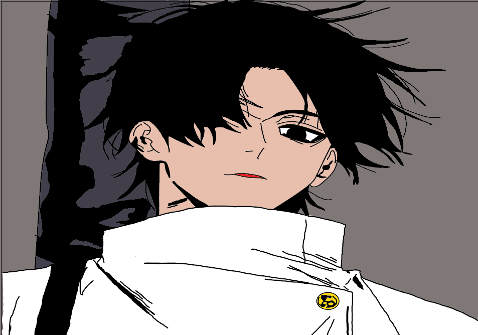
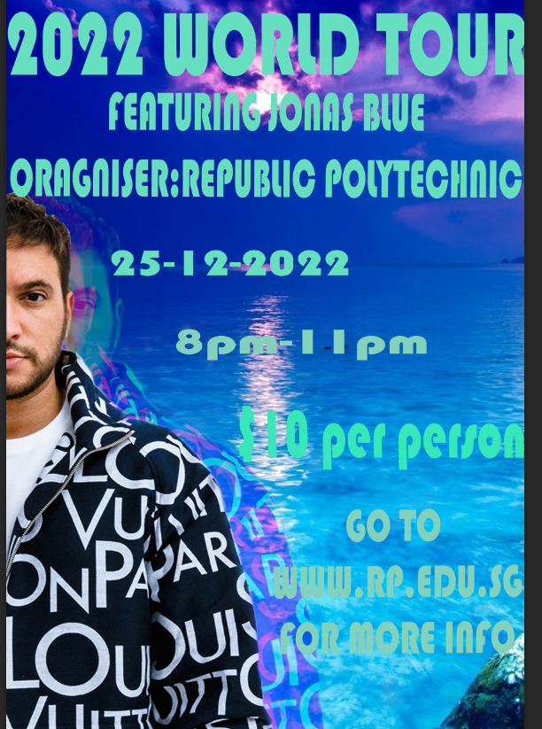

Digital Art
Character Drawing

Using Adobe Illustrator, I used the brush tool to draw the character out and than I proceeded to paint it with reference from the original image.
Laptop Poster
Using Adobe Photoshop, I cut out the image of a laptop and than added a neon line circling the laptop to give it a neon and electronic theme.
Artist Poster

Using Adobe Photoshop, I cut out the person and added duplicates of the person to give a echo theme with a ocean background.